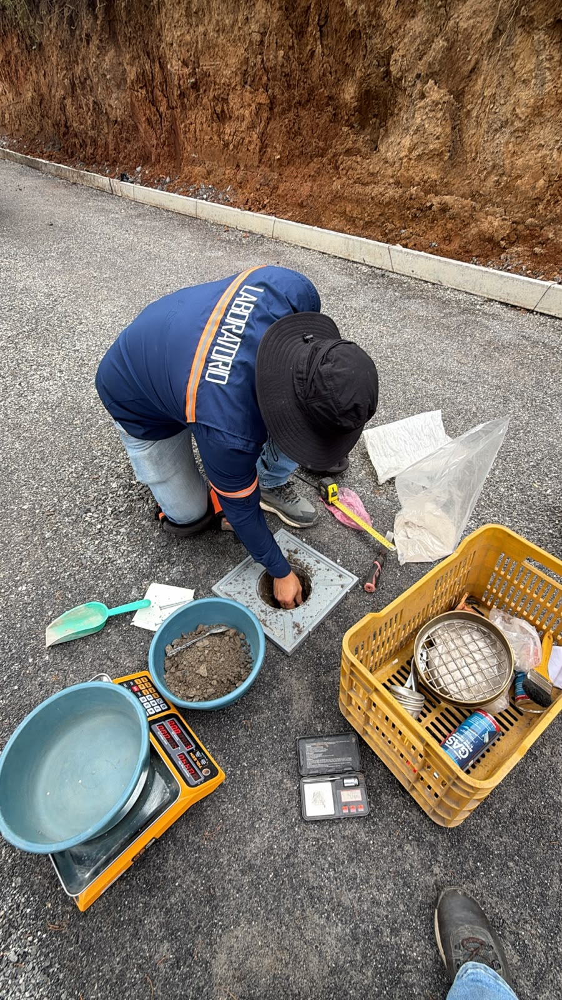
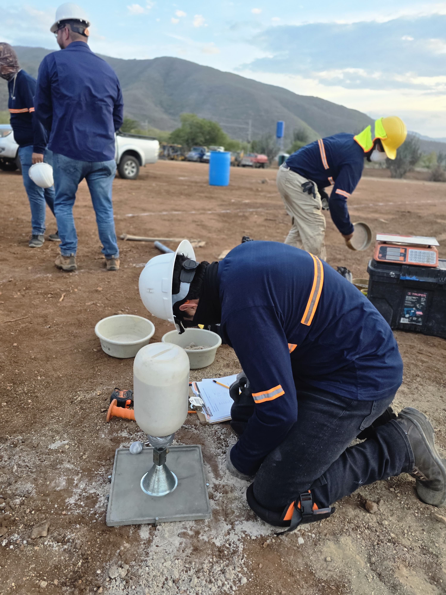
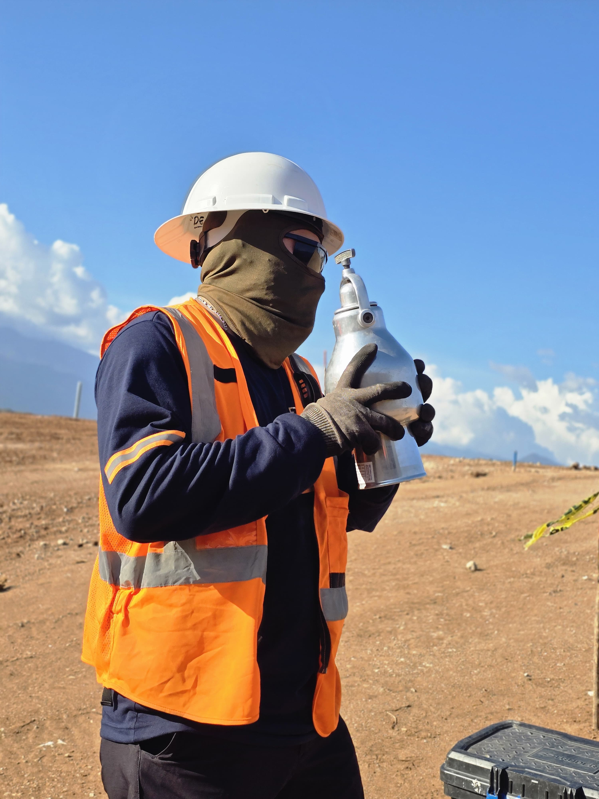
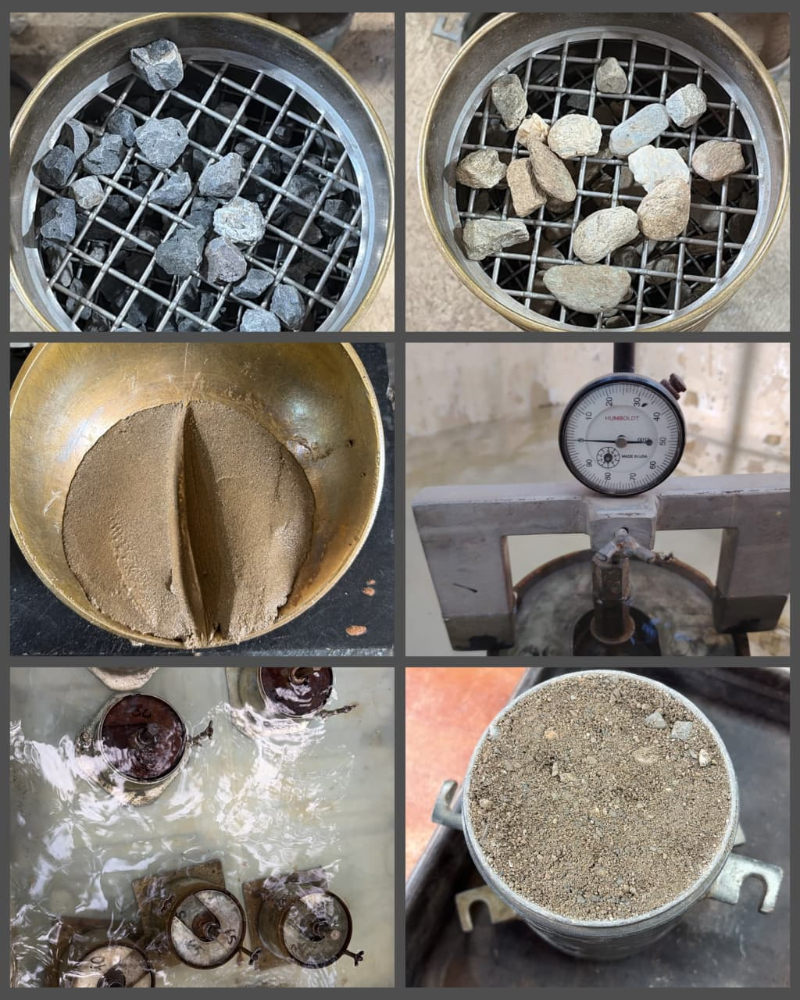
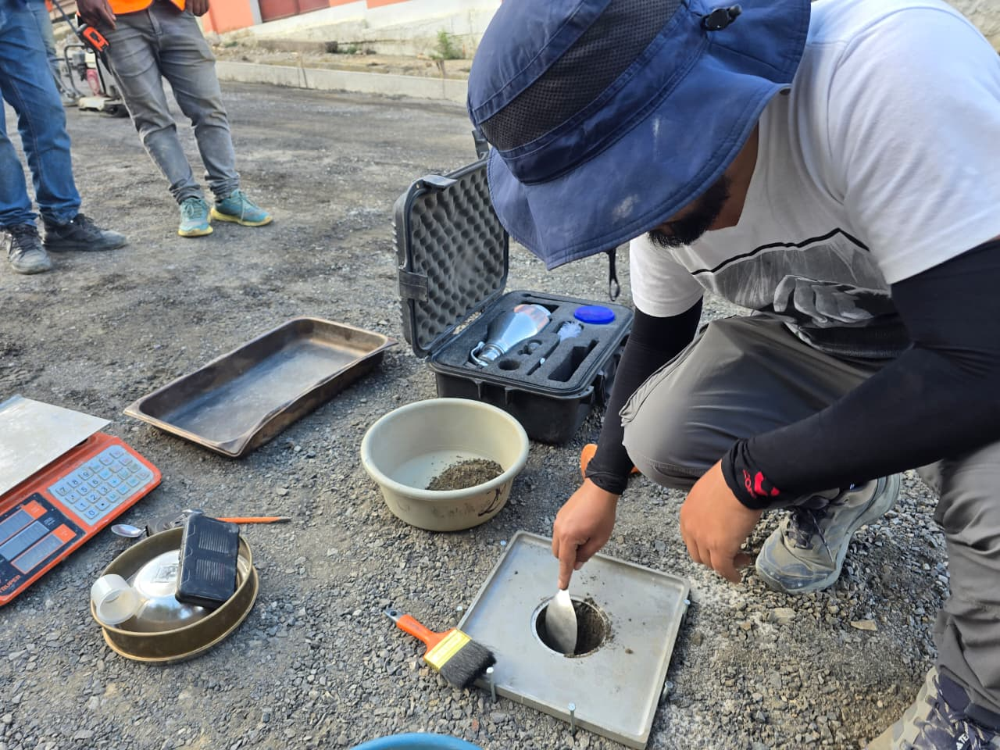
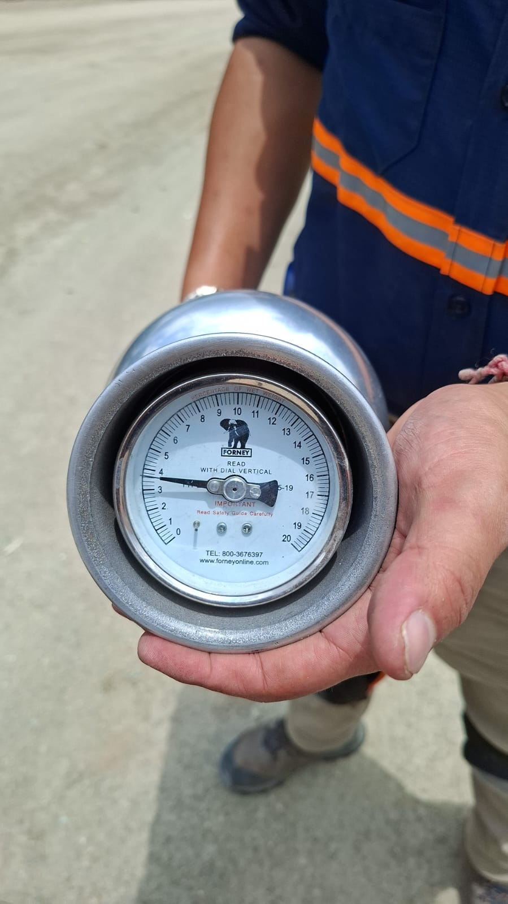
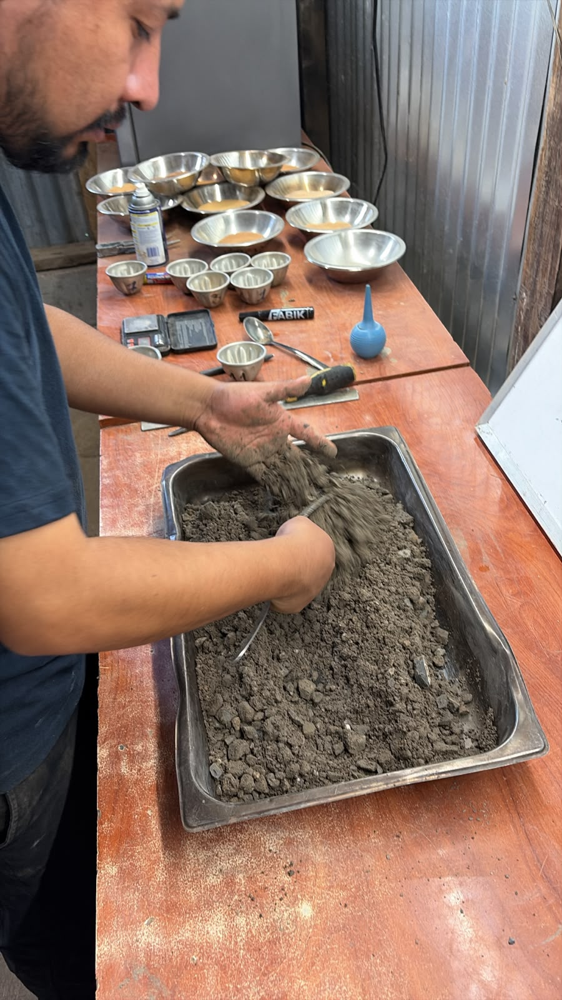

Ensayos realizados en laboratorio y campo para proyectos de construccion.

Laboratorio especializado en ensayos de suelos, materiales y concreto, con servicios en laboratorio y campo a nivel nacional
Brindar servicios de laboratorio de calidad para proyectos de ingeniería y construcción, proporcionando parámetros de evaluacion confiables para nuestros clientes.
Consolidarnos como una empresa confiable que aporte valor a los proyectos de construcción, innovando constantemente para ofrecer servicios cada vez mas avanzados.
Trabajamos para brindar resultados confiables, respaldados por la calidad de nuestros servicios y la confianza de nuestros clientes, con disponibilidad de operaciones a nivel nacional.

Realizamos ensayos de laboratorio y campo orientados a evaluar las propiedades y el comportamiento de suelos, concreto y materiales utilizados en proyectos de construcción.
Personal capacitado para realizar ensayos y evaluaciones con precisión.
Información técnica que respalda la evaluación y toma de decisiones en cada proyecto.
Servicios de laboratorio y campo para proyectos de construcción a nivel nacional.


Desde 2021 brindamos servicios de laboratorio y campo a nivel nacional, proporcionando resultados confiables para apoyar la evaluación y toma de decisiones en proyectos de construcción.
Proyectos atendidos
Ensayos realizados
Clientes atendidos



Determinación de la distribucion de tamulos de particulas presentes en muestras de suelos y agregados.
Evaluación de la relacion entre humedad y densidad para determinar las condiciones de compactación del suelo.
Verificación de la densidad y el grado de compactación alcanzado directamente en el suelo de obra.
Evaluacion de la resistencia a compresion de especimen de concreto para comprobar su desempeño.
Control de la consistencia y trabajabilidad del concreto fresco mediante el ensayo de asentamiento.
Evaluación de la resistencia al desgaste y degradación de los agregados utilizados en construcción.

Procesos técnicos orientados a obtener información precisa para respaldar la calidad y seguridad de cada proyecto.
Equipo capacitado para realizar ensayos de laboratorio y campo bajo procedimientos técnicos establecidos.
Servicios adaptados a las necesidades de cada proyecto, con capacidad para realizar evaluaciones directamente en obra.


Cuéntanos las necesidades de tu proyecto y te ayudaremos a identificar los ensayos adecuados para evaluar tus materiales y respaldar tus decisiones.
Solicita una cotización
Ejecutamos ensayos de laboratorio y campo en mecánica de suelos (granulometría, proctor, límites de Atterberg, CBR, corte directo y SPT), concreto fresco y endurecido (asentamiento, compresión y flexión), agregados (tamizados, masas unitarias, desgaste Los Ángeles) y unidades de mampostería bajo normas ASTM, AASHTO y NTG.
Sí, disponemos de brigadas técnicas con equipo móvil calibrado para trasladarse directamente a los proyectos, realizando muestreos de concreto fresco, pruebas de densidad in situ mediante cono de arena, exploración con pozos a cielo abierto y sondeos SPT.
Sí, brindamos cobertura técnica y disponibilidad de operaciones en toda la república de Guatemala, coordinando el traslado de instrumental y personal técnico desde nuestra sede en Cobán, Alta Verapaz hacia cualquier punto del país.
Puedes solicitar una propuesta enviando las especificaciones de tu obra a nuestro correo oficial info@laboratoriotestig.com, escribiéndonos vía WhatsApp o llamando directamente al teléfono +502 7951-0545.